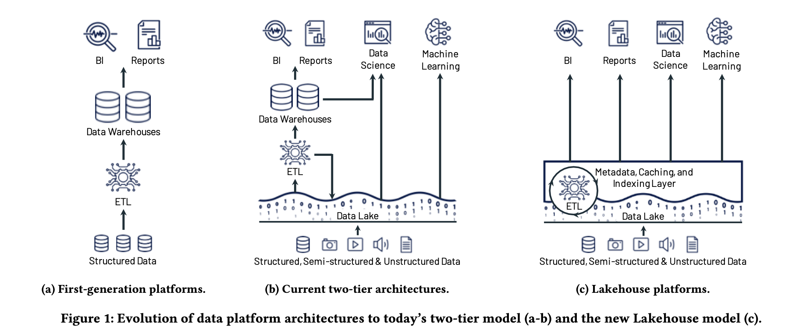
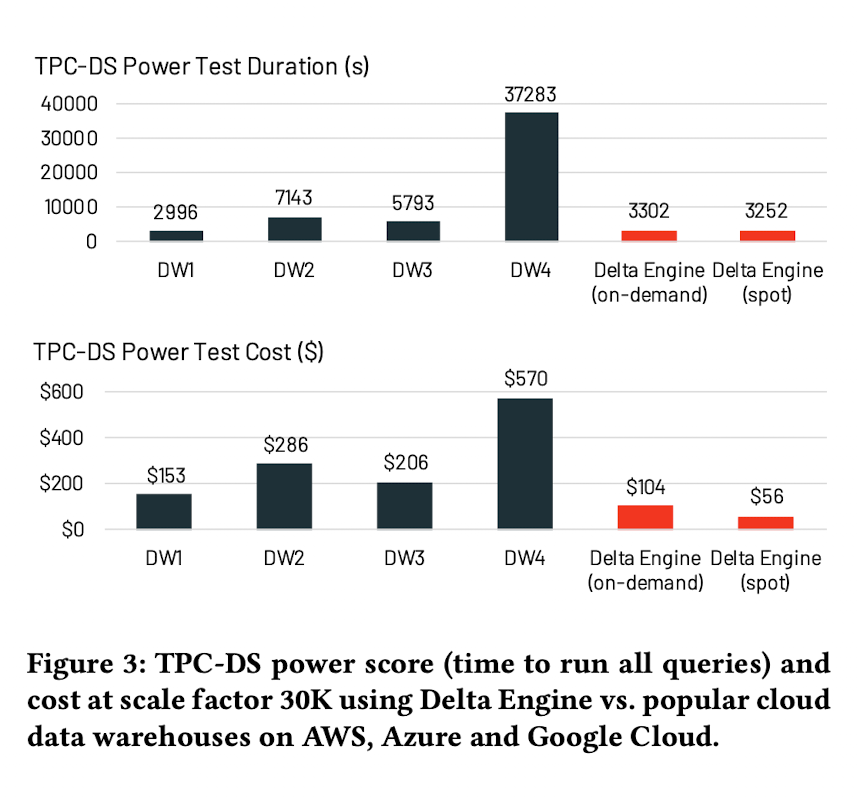

What is the research?
The paper introduces the Lakehouse architecture for data storage and analytics on open file formats. Their implementation provides comparable performance with better consistency by directly using the source data unlike the two-tier data lake + warehouse architecture which requires additional ETL and storage.
Architecture

It might not be evident in the figure but there’s usually a staging area where data is processed before loading it into a data warehouse.
Systems using the lakehouse architecture access and store data in an object store (owned by the customer) and run a transactional metadata layer on top to keep track of objects and which table they belong to.
The metadata layer enables safer access to the underlying data and allows multi-object updates (required since a single table is split across multiple files).
They don’t mention it in the paper but there’d be some kind of a catalog on top of the object metadata layer to track all the tables and their schema.
The data is stored using open file formats like Parquet or ORC.
Their implementation uses Delta Lake for metadata storage and the Delta Engine for execution.
Delta Lake stores the metadata as Parquet files in the data lake (object store) itself.
For better performance, they maintain additional data on top of the cloud data lake. Their execution engine caches files (on SSDs, RAM) and maintains auxiliary data (like indexes and stats).
Apart from this, they also reorder records to cluster.
They use space-filling curves to reorder data which based on multiple parameters instead of just one. Space-filling curves provide a way to encode those multi parameters into a single value while preserving the closeness of those records for better ordering.
I’d suggest checking out Hilbert’s curve if you’re interested.
Evaluation

They’ve used the TPC-DS benchmark with 30TB of data (stored as Parquet files). Even in their own evaluation, the Delta Engine doesn’t do too well compared to one of the undisclosed vendors on test duration and cost for on-demand instances.
But, getting similar performance to data warehouses (that require additional storage, data pipelines and have a proprietary format) is definitely a win.
Discussion
While the paper mentions supporting multiple formats, as per current Delta Lake docs1, it only supports storage in Parquet files.
You can import CSV, JSON and other formats but Delta Lake would need to convert them to Parquet files first. While Parquet is more efficient for storage and easier to optimize for execution, I’d like to see support for more unstructured formats.
They also mention decompressing the Parquet data in cache for faster execution. Using the Arrow in-memory format could make reads faster for “hot data”.
I also came across Building a serverless Data Lakehouse from spare parts in which the authors implement the lakehouse architecture entirely with open source tools.
File and table formats seem standard now. With recent efforts in commoditizing the catalog2 and execution3 layer, the lock-in will eventually move from the infra to the overall platform. Hopefully, this leads to vendors focusing on better UX for business and data science teams.